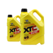

<section class="services-one">
    <div class="container">
        <h2 class="services-one__title title">
            Аппаратная замена охлаждающей жидкости <br>
            с промывкой системы
        </h2>
        <div class="services-one__inner">
            <div class="services-one__first">
                
                <a href="#" class="services-one__bring">
                    
                    <div class="services-one__bring-content">
                        <div class="services-one__bring-best">
                            Лучшие цены
                        </div>
                        <div class="services-one__bring-name">
                            Охлаждающие жидкости
                        </div>
                        <div class="services-one__bring-site">
                            BERRU.RU
                        </div>
                    </div>
                    <div class="services-one__bring-link">
                        
                    </div>
                </a>
            </div>
            <div class="services-one__description">
                <h4 class="services-one__description-name">
                    В услугу входит:
                </h4>
                <ul class="services-one__description-list">
                    <li class="services-one__description-item">
                        Осмотр на предмет утечек, порывов системы;
                    </li>
                    <li class="services-one__description-item">
                        Подключение аппарата;
                    </li>
                    <li class="services-one__description-item">
                        Откачивание старой жидкости, заполнение дистиллированной водой;
                    </li>
                    <li class="services-one__description-item">
                        Проверка герметичности системы;
                    </li>
                    <li class="services-one__description-item">
                        Запуск двигателя, проверка работы термостата;
                    </li>
                    <li class="services-one__description-item">
                        Заливка в систему промывочной жидкости;
                    </li>
                    <li class="services-one__description-item">
                        Промывка системы;
                    </li>
                    <li class="services-one__description-item">
                        Аппаратная замена жидкости;
                    </li>
                    <li class="services-one__description-item">
                        Проверка уровня охлаждающей жидкости;
                    </li>
                </ul>
            </div>
            <div class="services-one__price">
                <div class="services-one__price-content">
                    <div class="services-one__price-prices">
                        <p class="services-one__price-new">1690 ₽</p>
                        <p class="services-one__price-old">1990 ₽</p>
                    </div>
                    <p class="services-one__price-partners">
                        <i>+ 10</i> бонусов для участников <br> PITSTOP BONUS
                    </p>
                    <a href="#" class="services-one__price-link">
                        КУПИТЬ
                    </a>
                </div>
                <p class="services-one__price-text">
                    Цены на сайте могут отличаться <br>
                    в зависимости от вашего авто
                </p>
            </div>
        </div>
    </div>
</section>